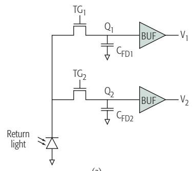
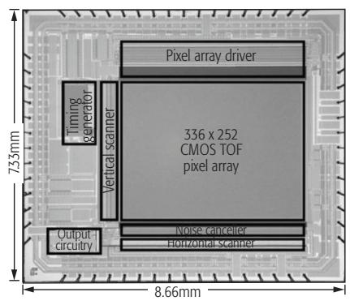
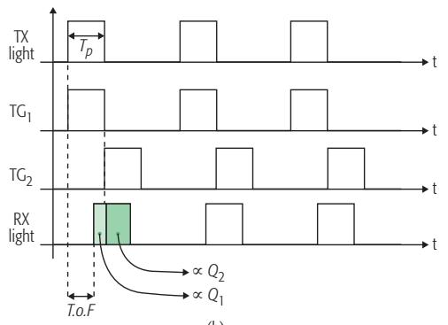
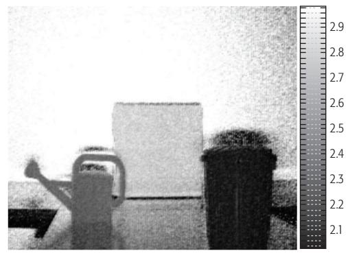

Lidar System Architectures and Circuits
Behnam Behroozpour, Phillip A. M. Sandborn, Ming C. Wu, and Bernhard E. Boser
Abstract
3D imaging technologies are applied in numerous areas, including self-driving cars, drones, and robots, and in advanced industrial, medical, scientific, and consumer applications. 3D imaging is usually accomplished by finding the distance to multiple points on an object or in a scene, and then creating a point cloud of those range measurements. Different methods can be used for the ranging. Some of these methods, such as stereovision, rely on processing 2D images. Other techniques estimate the distance more directly by measuring the round-trip delay of an ultrasonic or electromagnetic wave to the object. Ultrasonic waves sufer large losses in air and cannot reach distances beyond a few meters. Radars and lidars use electromagnetic waves in radio and optical spectra, respectively. The shorter wavelengths of the optical waves compared to the radio frequency waves translates into better resolution, and a more favorable choice for 3D imaging. The integration of lidars on electronic and photonic chips can lower their cost, size, and power consumption, making them affordable and accessible to all the abovementioned applications. This review article explains diferent lidar aspects and design choices, such as optical modulation and detection techniques, and point cloud generation by means of beam-steering or flashing an entire scene. Popular lidar architectures and circuits are presented, and the superiority of the FMCW lidar is discussed in terms of range resolution, receiver sensitivity, and compatibility with emerging technologies. At the end, an electronic-photonic integrated circuit for a micro-imaging FMCW lidar is presented as an example.
Introduction
The dream of self-driving cars has finally become a reality, but not yet a commodity. In addition to legal barriers, many technical issues remain to be solved before the steering wheel can be abandoned. Among these technical challenges is the refinement of the 3D imaging and mapping tools used for object recognition, navigation, and collision avoidance. The performance ofered by processing 2D images, such as stereovision techniques, would not be suficient for these purposes, necessitating the use of direct rangefinders based on ultrasonic, radar, and lidar technologies. The propagation of ultrasonic waves through air induces large losses that prevent the waves from reaching distances beyond a few meters, whereas radar and lidar waves can both propagate across long distances. Radar is a well established tool that can work even in poor weather conditions such as heavy rain, snow, or fog. However, the shorter wavelength and superior beam properties of the lightwaves used in lidar offer a more suitable choice for 3D imaging and point cloud generation. Unfortunately, current lidar solutions are costly, bulky, and power-hungry, or they perform poorly. Researchers in this area are working to develop an inexpensive solution that ofers the required performance with reasonable size and power consumption. In addition to self-driving cars, numerous other applications will benefit from an affordable 3D imaging technology: Drones that need 3D imaging for their navigation are becoming increasingly popular for use in surveillance, delivery of goods, aerial mapping, agriculture, construction, high-risk monitoring, defense, and search and rescue missions. The number of personal and industrial robots is projected to surpass tens of millions during the next decade, and 3D imaging could become a popular aid for their control. There are countless other applications in medical, scientific, industrial, defense, and consumer areas that would benefit from lidar-based rangefinders and 3D cameras.
Specifications including the operating distance, range resolution, acceptable ambient light and interferers’ levels, measurement speed and frame rate, multi-target detection capability, power consumption, maximum permissible optical exposure, and other parameters can vary significantly across different applications. This article describes the basic lidar architecture, followed by more details on popular lidar schemes that provide insight into the important design choices and trade-ofs.
Basic Lidar Architecture
Figure 1 illustrates the main components of a typical lidar, which, like radar, includes a transmitter and a receiver. The range R is measured based on the round-trip delay of light to the target, t:
where c is the speed of light in the medium between the lidar and the target , air). Based on this equation, and because in most cases the speed of light is known to a very good accuracy, the lidar-based range measurement is equivalent to measuring the round-trip delay of lightwaves to the target. This is achieved by modulating the intensity, phase, and/or frequency of the waveform of the transmitted light and measuring the time required for that modulation pattern to appear back at the receiver. In the most trivial case of intensity modulation, a short light pulse
The authors explain different lidar aspects and design choices, such as optical modulation and
detection techniques, and
point cloud generation by
means of beam-steering or flashing an entire scene. Popular lidar
architectures and circuits are presented, and the
superiority of the FMCW
lidar is discussed in terms of range resolution, receiver sensitivity, and
compatibility with emerging technologies.

Figure 1. Basic lidar-based 3D camera architecture.
is emitted toward the target, and the arrival time of the pulse’s echo at the receiver marks the distance. Lasers are the preferred source of light because of their narrow spectra and superior beam properties; furthermore, phase- and frequency-modulation (PM and FM) lidars require the laser light’s coherence. Lasers with wavelengths of 905, 1300, or 1550 nm, which are near the three established telecommunications windows, are commonly used in lidar applications.
To create a 3D image, the light should be directed to all the points in a desired field of view (FOV). This can be done by distributing the light to the entire scene at once (flash lidar), by employing a beam-steering unit to scan the FOV, or by a combination of these. In flash lidar, the different points in the FOV should be differentiated in the receiver using proper imaging optics, similar to the lens-set of a photographic camera. Over the years, many different beam-steering techniques have been developed. Foremost among these are mechanical motion of the light source [1]; deflection of the light using a macroor micro-mechanical mirror [2]; optical-phased arrays (based on liquid crystals [3], MEMS mirrors [4], or silicon-photonic tunable phase elements [5] and wavelength tuning [6]).
Finally, in the receiver, the scattered light from the target is collected, and the delay in its modulation pattern vs. the source light is extracted and used for ranging. In a 3D camera based on flash lidar, the receiver has multiple pixels, and the time of flight should be measured separately for each pixel.
Important Performance Metrics
The most important performance metrics for a lidar-based 3D camera are its axial precision, lateral resolution, FOV, frame rate, transmit power in relation to eye safety, maximum operating range, sensitivity to ambient light and interferers, power consumption, and cost. These metrics are briefly discussed here.
Axial Precision
The terms axial or range precision refer to the standard deviation of multiple range measurements performed for a target at a fixed distance . This should not be confused with range resolution (dR). Range resolution refers to the lidar’s ability to resolve multiple closely spaced targets in the axial direction. For example, when 3D imaging an organic tissue, the emitted light is reflected by the interfaces between the tissue’s different layers. In this case, better axial resolution helps in detecting thinner tissue layers, while better axial precision improves the certainty with which the interfaces between these layers can be located. The latter can be improved by averaging the results of multiple measurements.
For any time-of-flight ranging system based on either electromagnetic or ultrasonic waves, the range resolution can be found using the following equation [7]:
where c is the velocity of the waves, and B is the bandwidth of the information they carry. This means the information content on the waves should vary fast enough that the reflections from two targets separated by dR can be meaningfully distinguished in the receiver. The time diference between the reflections from two such targets is , translating to a bandwidth inversely proportional to this time, or . The speed of the waves in air for both optical and radio frequency waves is equal to . The bandwidth of radio frequency waves can reach tens of gigahertz, resulting in centimeter-range resolution; however, optical waves can have much larger bandwidth, enabling micrometer-range resolution. Although the ranging precision is different from the resolution, their values are not entirely independent. In has been shown that SNR; where s2R is the variance of the measured range, and SNR is the signal-to-noise ratio of the received signal. In other words, sharper changes in the information content of the waves, resulting in smaller dR, as well as higher SNR can improve the ranging precision.
FOV and Lateral Resolution
FOV is usually specified with two horizontal and vertical angles around the axis perpendicular to the camera aperture within which the distance can be measured. Lateral or angular resolution of a 3D camera is a measure of its ability to distinguish two adjacent points in the FOV. Optical waves with micrometer wavelength can achieve lateral resolutions of with aperture sizes of only a few hundred micrometers that easily fits on a single chip. However, radio frequency waves with frequencies near 100 GHz would require a 1-m aperture for the same resolution, which is challenging to implement in many applications. In a flash lidar, similar to a photographic camera, the lateral resolution and FOV are defined by the optical front of the receiver and also the photodetector’s array size. However, in a beam-steering lidar the properties of the emitted laser beam, such as its divergence angle, side lobes, and scan range, have more significant efect on the FOV and lateral resolution. FOV is of particular importance in 3D mapping for self-driving cars and drones, where a view of the surroundings is often necessary. At the time of this writing, such a large FOV can be achieved either by mechanically moving a 3D camera with a smaller FOV or by stitching the outputs of multiple 3D cameras using computer software.
Emitted Power and Eye Safety
For lidar applications where a longer operating range is important, a larger transmit power is desired. However, the maximum transmit power is often limited by eye safety regulations. This is a greater concern for lidars than radars because a coherent laser beam with milliwatts of power can cause serious damage to the human eye. The maximum permissible exposure (MPE) of a laser product depends strongly on its wavelength, beam diameter and divergence, beam motion, duration of exposure for continuous-wave operations, and pulse width and repetition rate for pulsed operations. As a result, eye safety is an important determinant in the selection of such parameters when designing a lidar.
Maximum Operating Range
Maximum operating range is usually limited by the transmit power level and the receiver sensitivity. In a beam-steering lidar, the operating range can be improved by reducing the beam divergence and its side-lobes. In all lidar categories, a larger receive aperture can increase the amount of collected optical power and improve the operating range.
In long-range 3D cameras, beam-steering lidars are more commonly employed than flash lidars. This seems to be a straightforward choice considering that in a beam-steering lidar the entire laser power is focused on a single spot at one time, creating a stronger echo compared to the distributed light in a flash lidar; however, it must be noted that in a flash lidar, the parallel measurement of all pixels allows a longer measurement time per pixel to achieve the same frame rate, which can be used to average the noise and retain the SNR to some extent.
In the lidar types in which the modulation is applied to the phase or frequency of the light, phase noise of the laser beam can also limit the maximum operating range.
Popular Lidar Architectures
The combination of choices available for the different lidar blocks can result in a wide variety of lidar architectures. Among these, pulsed, amplitude-modulated continuous-wave (AMCW) and frequency-modulated continuous-wave (FMCW) are the most popular schemes, and these are discussed in this section. Figure 2 illustrates the range precision vs. maximum operating distance for lidars presented since 1990, and the regimes in which each of these lidar types have often been employed are indicated by the shaded areas.
Pulsed lidar can provide moderate precision over a wide window of ranges. This is thanks to the fact that the nanosecond pulses used in these lidars often have high instantaneous peak power that can reach far distances while maintaining low average power below the eye-safe limit. Furthermore, according to Eq. 2, the large bandwidth associated with short pulses can enable high-precision range measurements with a relative range error acceptable even at short distances.
AMCW lidar can achieve precision similar to that of the pulsed lidar but only at moderate ranges; it is usually secondary parameters such as the fabrication cost that motivate the selection of one or the other in this regime of range and precision. AMCW lidars are not popular for long-range measurements because they transmit continuous optical power that has to remain below the eye-safe limit at all times; therefore, the eco signal at their receiver coming from far objects is not as strong as it is in pulsed lidars.

Figure 2. Precision vs. operating range for academically published and industrial lidars since 1990.
FMCW lidar is the only architecture that has been used to achieve sub-micrometer precision in multiple designs. This is enabled by direct modulation and demodulation of the signals in the optical domain with much larger bandwidth than that possible when using electronic circuitry. There are also instances of using FMCW lidar for moderate and long-range applications with a precision comparable to or better than that of pulsed and AMCW lidars.
In the rest of this article, the three popular lidar categories are discussed in more detail, and one instance in which integrated circuits were effectively used to achieve a significant performance improvement is presented for each type. These examples are highlighted in Fig. 2.
Pulsed Lidar
In this type of lidar (Fig. 3), the round-trip delay of a short pulse of light to the target is measured to find the target’s distance. Shorter pulse widths are desired to increase the peak power while maintaining the average eye-safe exposure. Furthermore, from Eq. 2, it can be seen that the axial resolution of the lidar is improved by increasing the pulse bandwidth, which is equivalent to reducing its width. Most applications use pulses with durations from less than 1 ns to tens of nanoseconds.
Although the name “pulsed lidar” is mainly descriptive of the modulation method in the transmitter, it also influences the receiver design. Single-photon avalanche detectors (SPADs) are often employed in pulsed lidar receivers to improve their sensitivity and increase their operating distance. The high interest in these detectors has motivated their development in complementary metal oxide semiconductor (CMOS)-compatible processes to reduce their cost [8]. SPADs are essentially avalanche photodiodes operating in the reverse-biased mode slightly beyond their breakdown voltage. Because of the strong electric field from the reverse-bias voltage, the electron-hole pairs generated by photon absorption or thermal fluctuation are accelerated to a level that can trigger an avalanche process. At this point, the electronic circuitry around the SPAD must
Maximum operating range is usually limited by the transmit power level and the
receiver sensitivity. In a
beam-steering lidar, the
operating range can be
improved by reducing
the beam divergence
and its side-lobes. In all
lidar categories, a larger receive aperture can
increase the amount of
collected optical power and improve the operating range.

Figure 3. Pulsed lidar with flash light distribution presented in [8]: a) simplified architecture; b) timing diagram; c) chip photomicrograph; d) 3D image of a human face (in millimeters).
reduce the reverse-bias voltage to stop the avalanche and prepare the device for the next detection. The timing of the avalanche event can then be recorded by the electronic circuits to mark the arrival time of the pulse echo to the receiver. The SPAD recovery time can extend up to 100 ns and limit the measurement rate.
SPADs are susceptible to false detections due to either the thermal noise of the detector itself or photons from the ambient light that happen to be at the detectable wavelength window. Therefore, SPAD receivers are often employed in a statistical architecture where the arrival times of multiple repetitive pulses, sometimes recorded by many SPADs in parallel, are accumulated in a histogram. The recordings in a time window of comparable duration to the emitted pulse width have a higher chance of being part of the expected signal. This fact is used to filter out unwanted recordings and improve the measurement precision. This technique is referred to as time-correlated single-photon counting (TCSPC), and has gained popularity in pulsed lidars and also in fluorescence lifetime measurements.
Pulsed lidars can operate in either flash or beam-steering modes. The latter is often the preferred choice for long-range applications. Among the beam-steering technologies mentioned in previous sections, silicon-photonic phased arrays (SPPAs) are more popular because of their compatibility with fully integrated chip-scale lidars. The foremost attraction of this technology is that it could provide solid-state lidars with no mechanical parts, taking advantage of the potential high-volume and low-cost manufacturing achieved by today’s integrated circuit industry. Recently, there have been preliminary demonstrations of such technologies, and strong growth in this direction is expected within the next decade. However, the large peak power of the pulsed lidars combined with the small effective cross-section of the silicon-photonic waveguides can enhance undesirable nonlinear optical processes in the silicon. Therefore, pulsed lidars are not currently preferred for use with SPPAs, compared to continuous-wave techniques such as AM- or FMCW.
AMCW Lidar
As with pulsed schemes, AMCW lidars operate by modulating the light’s intensity. However, the modulation waveform does not include sharp pulses and carries much less frequency content. Hence, AMCW lidars cannot offer fine range resolution with multi-target detection capability. Nonetheless, the precision of the range measurement can be less than a centimeter, which is suficient for many applications.
AMCW lidars employ continuous-wave or quasi-continuous-wave laser diodes or LEDs on their transmitter. The intensity can be modulated by varying the bias current of the diode in the electrical domain. The simplicity of these lidars makes them an attractive choice for short-range indoor applications such as gaming and robotics. To reduce the cost of the receiver chip, clever circuit topologies similar to the traditional CMOS imaging pixels have been developed [9, 10].
A simplified circuit schematic and timing diagram of the pixel proposed in [9] are shown in Figs. 4a and 4b. The received light is detected by a single photodiode, but the collected charge is transferred to two separate nodes depending on

(a)

(c)

(b)
FMCW lidars are fundamentally different from the pulsed and AMCW schemes. Both pulsed and AMCW lidars rely

Figure 4. AMCW lidar employed in a CMOS imager for 3D depth measurement in [9]: a) pixel topology; b) timing diagram; c) chip photomicrograph; d) 3D image of scene (scale in meters).
on modulating the intensity of the light. In the receivers of these lidars, the photons are often treated as particles with the range information encoded in their arrival times. In contrast, FMCW lidars rely on the wave properties of the light.
(d)
its time of arrival. The charge transfer is controlled by the two transfer gates, and . For short target distances, most of the charge generated by the return light is transferred to node . For longer distances, the return light experiences more delay, and therefore less charge gets transferred to node and more appears at node . Thus, the ratio of the collected charge at these two nodes is a measure for the time of flight.
The conversion of the time of flight to charge renders this architecture fully compatible with the conventional CMOS RGB pixels that translate the intensity of the ambient light into accumulated charge. Furthermore, the ratiometric nature of the measurement increases its robustness against temperature and process variations and helps suppress the background light and environmental disturbances.
FMCW Lidar
FMCW lidars are fundamentally diferent from the pulsed and AMCW schemes. Both pulsed and AMCW lidars rely on modulating the intensity of the light. In the receivers of these lidars, the photons are often treated as particles with the range information encoded in their arrival times. In contrast, FMCW lidars rely on the wave properties of the light. In these lidars, the modulation is applied to the frequency of the light field, and an interferometric detection scheme is employed in their receivers [11]. Therefore, the large frequency bandwidth in the optical domain becomes accessible and can be exploited to improve the lidar performance. Unlike pulsed or AMCW lidars, in the FMCW scheme, the interferometric down-conversion of the received signal in the optical domain eliminates the need for wideband electrical circuits. Therefore, mainstream CMOS electronics can be used to achieve exceptional range resolution and precision.
The basic architecture of an FMCW lidar is shown in Fig. 5a. In this case, the frequency of the light emitted from the transmitter is linearly modulated vs. time. The echo light reaches the receiver after the round-trip delay For a static target with negligible Doppler efect on the lightwaves, the delay between the collected light and the source causes a constant frequency diference between them, as shown in Fig. 5b. With the linear frequency modulation, is directly proportional to and hence the target range. To measure a branch of the source light is used as the local oscillator (LO) and is combined with the collected light in a waveguide. The frequency difference between the two light components translates into a periodic phase difference between them and causes an alternating constructive and destructive interference pattern at the frequency A photodetector is used to convert this pattern into a photocurrent. Measurement of the photocurrent frequency enables range estimation through the following:
where is the slope of the frequency modulation vs. time with a unit of Hertz per second. This equation demonstrates that the range precision depends on the measurement precision of and also the precision with which the modulation slope g is controlled or known.
In addition to finer range resolution, the FMCW scheme can also offer much better sensitivity and robustness against environmen-
The mixing gain amplifies the signal before its detection in the photodiode, reducing the electrical noise of the detector referred back to the optical domain. Furthermore, the phase and frequency coherence of the received signal and the LO is necessary to create the interference pattern, rendering the coherent receiver more
selective against the ambient light.

Figure 5. FMCW lidar: a) architecture; b) waveforms. FM light generation using: c) tunable laser; d) electro-optic modulator; e) I/Q modulator.
tal disturbances compared to the pulsed and AMCW lidars because of the FMCW’s coherent detection scheme. The interference pattern of the collected beam and the LO in the coherent receiver is similar to the mixing of the two signals in an electrical receiver. The mixing gain amplifies the signal before its detection in the photodiode, reducing the electrical noise of the detector referred back to the optical domain. Furthermore, the phase and frequency coherence of the received signal and the LO is necessary to create the interference pattern, rendering the coherent receiver more selective against the ambient light.
It was previously mentioned that a constant output optical power is desirable for the silicon-photonic-based beam-steering techniques. Therefore, unlike the pulsed architecture, where the large peak power constrains its use in SPPAbased lidars, the fixed light intensity of the FMCW scheme can become increasingly popular as the growing accessibility of SPPAs makes them a mainstream choice for beam-steering lidars.
As illustrated in Figs. 5c and 5d, a tunable laser (TL) or an electro-optic modulator (EOM) can be used to modulate the light’s frequency. Tunable lasers are similar to electrical voltage-controlled oscillators (VCOs), but their output is an optical wave rather than an electrical signal. Electro-optic modulators can be viewed as electrical mixers that accept one optical and one electrical signal as their inputs and output an optical signal that is the mix of the two inputs. The frequency of the output optical signal can be tuned by employing a frequency-chirped electrical signal at the modulator input. As with electrical mixers, the electro-optic modulators also create two sidebands in the optical spectrum, as shown in Fig. 5d. In such cases, a coherent receiver capable of detecting both in-phase and quadrature (I/Q) optical fields can be used to extract the target range. An alternative method is to use an I/Q electro-optic modulator to suppress the carrier and create a single-side-band frequency shift in the emitted light [12], as shown in Fig. 5e.
Although both of the aforementioned frequency modulation techniques are theoretically equivalent, there are some practical differences that might make one or the other more suitable for a particular application. The main difference between the two methods is that when using a tunable laser, the frequency tuning happens purely in the optical domain, whereas with an electro-optic modulator, the frequency tuning is generated in the electrical domain and used to modulate the frequency of the light in another step. The modulation bandwidth of a tunable laser can reach beyond 10 THz, which is not achievable by electro-optical modulation. Therefore, architectures based on tunable lasers are more suitable for applications where deep sub-millimeter resolution is necessary.
The possibility of varying a tunable laser’s frequency by a large amount and at a fast rate

Figure 6. Integrated electro-optical PLL for precision FM light generation a) architecture; b) chip picture and photomicrograph; c) photograph of a gear and its 3D microimage from the FMCW lidar.
The coherence range of widely tunable laser diodes can be as small as a few millimeters, whereas for a fixed-frequency laser employed in an FMCW lidar with electro-optic modulator, the coherence range can reach up to hundreds of meters. This makes the latter a more suitable option for longrange applications.
makes its wavelength more sensitive to noise and environmental disturbances such as temperature variation; hence, widely tunable lasers often sufer from larger phase noise. This phase noise can be tolerated as long as the target range and related delay between the received light from the target and the LO are suficiently small that the majority of their phase noise is correlated and cancels out in the coherent detection process. However, for long-range lidars, the phase noise of the two light components becomes uncorrelated and the spectrum of the interference signal widens, dropping the power in its fundamental tone. The target range at which the power in the fundamental tone drops to half of its maximum expected value is called the coherence range. This is a measure of the FMCW lidar’s maximum operating range. The coherence range of widely tunable laser diodes can be as small as a few millimeters, whereas for a fixed-frequency laser employed in an FMCW lidar with electro-optic modulator, the coherence range can reach up to hundreds of meters. This makes the latter a more suitable option for longrange applications where a few millimeters of resolution is suficient and wide optical tuning is not needed.
Electronic-Photonic Integrated Circuit for FMCW Lidar
As with a VCO, the frequency of a tunable laser can be controlled in a feedback architecture [13], as illustrated in Fig. 6a. This is achieved by measuring the modulation slope and adjusting it by the laser control signal [14]. The modulation slope is measured using a Mach-Zehnder interferometer (MZI), the operation of which is very similar to the FMCW range measurement technique, except the unknown round-trip delay to the target is replaced with a known fixedlength waveguide. Consequently, the interference frequency generated at the output of the MZI is proportional to g and the waveguide delay: . Because the waveguide delay is fixed, any fluctuations in can be interpreted as variation in phase locked loop (PLL) circuit can be used to measure these fluctuations against a reference frequency and the fluctuations can be suppressed by adjusting the laser control signal to ensure that Because the linear modulation cannot continue indefinitely, a hysteresis comparator observes the level of and reverses its slope (to generate up/down ramps) whenever it crosses some predefined boundaries.
The control loop for the laser modulation is implemented on a heterogeneously integrated electronic-photonic chip stack as described in [13]. The MZI and the photodetector are fabricated on a silicon-photonic chip, and the electronic circuits are designed in a 0.18 m CMOS process. The two dies are integrated using through-silicon-vias (TSVs) to make a single chip-stack as shown in the photograph.
This electronic-photonic integrated circuit modulates the frequency of a discrete tunable laser with high precision and repeatability. The output light of the laser is used to create a 3D image of a gear placed at a 40-cm distance from the source, at a rate of 10 kP/s with 11-m range precision and 250-m lateral resolution. The 3D image reconstructed from this measurement is shown in Fig. 6c.
While the objective of this particular work was to achieve a fine range precision, the design
As photonic devices become more accessible through monolithic CMOS processes or heterogeneously integrated silicon-photonic and CMOS platforms, more flavors in FMCW transmit and receive architectures will lead to fully integrated next-generation lidars that can be designed and optimized
for a wide range of applications.
trade-offs explained herein can also be used to guide the development of FMCW lidars that are more suitable for long-range applications with lower range resolution [15].
Conclusion
Accurate detection of the surrounding environment is of the utmost importance to the successful operation of autonomous machines such as self-driving cars, drones, and indoor robots. Among different sensory systems, 3D cameras have proven to be an essential aid for such machines, providing precise dimensions of and distances to objects in their vicinity. Among different 3D imaging techniques, the fine volumetric resolution and long operational distance of lidar-based solutions have significantly surpassed those of other techniques. Many different lidar architectures have been investigated over the last several decades. Among them, FMCW lidars provide the finest resolution for short-range applications. Because of their coherent detection scheme, they can also detect the lowest returning light levels from distant targets at the fundamental shot noise limit. In addition, the constant optical power level at their output is compatible with the emerging silicon-photonic-based optical phased arrays for beam steering, which cannot easily accommodate the large peak power of a pulsed lidar. This is particularly important, because the high cost of the current beam steering solutions is one of the major challenges in developing inexpensive longrange lidars, and silicon-photonic phased-array is one of the most promising technologies that can solve this issue. These characteristics have made the FMCW lidars an increasingly attractive choice for applications from those in advanced medical and scientific fields to self-driving cars and drones. As photonic devices become more accessible through monolithic CMOS processes or heterogeneously integrated silicon-photonic and CMOS platforms, more flavors in FMCW transmit and receive architectures will lead to fully integrated next-generation lidars that can be designed and optimized for a wide range of applications.
Acknowledgment
The authors would like to thank Dr. Niels Quack and Dr. Tae-Joon Seok, former members of the lidar research team at the University of California at Berkeley, and also Dr. Mahdi Kashmiri and Dr. Ken Wojciechowski from Robert Bosch LLC Research and Technology Center in Palo Alto for their critical feedback on this article. The authors would also like to thank DARPA’s Diverse Accessible Heterogeneous Integration Program as the main funding agency for this research; the TSMC University Shuttle Program for CMOS chip fabrication; the Marvell Nanofabrication Laboratory at the University of California at Berkeley for the fabrication of the silicon-photonic chips; and the Berkeley Sensor and Actuator Center and the UC Berkeley Swarm Lab for their continuous support.
References
[1] R. Halterman and M. Bruch, “Velodyne HDL-64E LIDAR for Unmanned Surface Vehicle Obstacle Detection,” Proc. SPIE Defense, Security, and Sensing, Int’l. Society for Optics and Photonics, Orlando, FL, 2010.
[2] E. S. Cameron, R. P. Szumski and J. K. West, “Lidar Scanning System,” U.S. Patent 5006721, 9 Apr. 1991.
[3] D. P. Resler et al., “High-Efficiency Liquid-Crystal Optical Phased-Array Beam Steering,” Optics Letters, vol. 21, no. 9, 1996, pp. 689–91.
[4] B.-W. Yoo et al., “A 32 32 Optical Phased Array Using Polysilicon Sub-Wavelength High-Contrast-Grating Mirrors,” Optics Express, vol. 22, no. 16, 2014, pp. 19,029–39.
[5] J. Sun et al., “Large-Scale Nanophotonic Phased Array,” Nature, vol. 493, no. 7431, 2013, pp. 195–99.
[6] K. Van Acoleyen et al., “Off-Chip Beam Steering with a One-Dimensional Optical Phased Array On Silicon-On-Insulator,” Optics Letters, vol. 34, no. 9, 2009, pp. 1477–79.
[7] P. M. Woodward, Probability and Information Theory, with Applications to Radar, Pergamon Press, 1953.
[8] C. Niclass et al., “Design and Characterization of a CMOS 3-D Image,” J. Solid-State Circuits, vol. 40, no. 9, 2005, pp. 1847–54.
[9] S. Kawahito et al., “A CMOS Time-of-Flight Range Image Sensor with Gates-on-Field-Oxide Structure,” IEEE Sensors J., vol. 7, no. 12, 2007, pp. 1578–86.
[10] W. Kim et al., “A 1.5Mpixel RGBZ CMOS Image Sensor for Simultaneous Color and Range Image Capture,” Proc. Int’l. Solid-Sate Circuits Conf., San Francisco, CA, 2012.
[11] D. Uttam and B. Culshaw, “Precision Time Domain Reflectometry in Optical Fiber Systems Using a Frequency Modulated Continuous Wave Ranging Technique,” J. Lightwave Technology, vol. 3, no. 5, 1985, pp. 971–77.
[12] P. A. Sandborn et al., “Dual-Sideband Linear FMCW Lidar with Homodyne Detection for Application in 3D Imaging,” Proc. Conf. Lasers and Electro-Optics, San Jose, CA, 2016.
[13] B. Behroozpour et al., “Electronic-Photonic Integrated Circuit for 3D Microimaging,” IEEE J. Solid-State Circuits, vol. 52, no. 1, 2017, pp. 161–72.
[14] N. Satyan et al., “Precise Control of Broadband Frequency Chirps Using Optoelectronic Feedback,” Optics Express, vol. 17, no. 18, 2009, pp. 15991–99.
[15] G. N. Pearson et al., “Chirp-Pulse-Compression Three-Dimensional Lidar Imager with Fiber Optics,” Applied Optics, vol. 44, no. 2, 2005, pp. 257–65.
Biographies
Behnam Behroozpour [M’16] received his B.Sc. degree from Sharif University of Technology, Tehran, Iran, in 2010, his M.Sc. degree from the University of Twente, Enschede, the Netherlands, in 2012, and his Ph.D. degree from the University of California at Berkeley in 2016. He is currently a research engineer with Bosch LLC, Palo Alto, California. His research interests include electronic and photonic integrated circuits, MEMS, LIDAR, and 3D imaging technologies.
Phillip A.M. Sandborn received his B.Sc. degree in electrical engineering and mathematics from the University of Maryland, College Park, in 2012. He is currently pursuing a Ph.D. degree in electrical engineering with the University of California at Berkeley. His current research interests include 3D imaging using LIDAR, optical phase-locked loops, optical packaging, and noise-limited performance of optical systems.
Ming C. Wu [F’02] received his Ph.D. degree from the University of California at Berkeley in 1988. He is currently a Nortel Distinguished Professor of Electrical Engineering and Computer Sciences with the University of California at Berkeley. He was a Packard Foundation Fellow from 1992 to 1997. He received the 2007 Paul F. Forman Engineering Excellence Award from the Optical Society of America and the 2016 William Streifer Award from the IEEE Photonics Society.
Bernhard E. Boser [F’03] received his Ph.D. degree from Stanford University, California, in 1988. In 1992, he joined the Faculty of the EECS Department, University of California at Berkeley. He is also a co-founder of SiTime, Santa Clara, California, and Chirp Microsystems, Berkeley, California. He served as the President of the Solid-State Circuits Society and on the Program Committees of ISSCC, VLSI Symposium, and Transducers. He also served as the Editor-in-Chief of the IEEE Journal of Solid-State Circuits.
md/2017_Lidar_System_Architectures_and_Circuits.md 预渲染生成。公式以 MathML 呈现，浏览器原生渲染，不依赖外部脚本或字体 CDN。